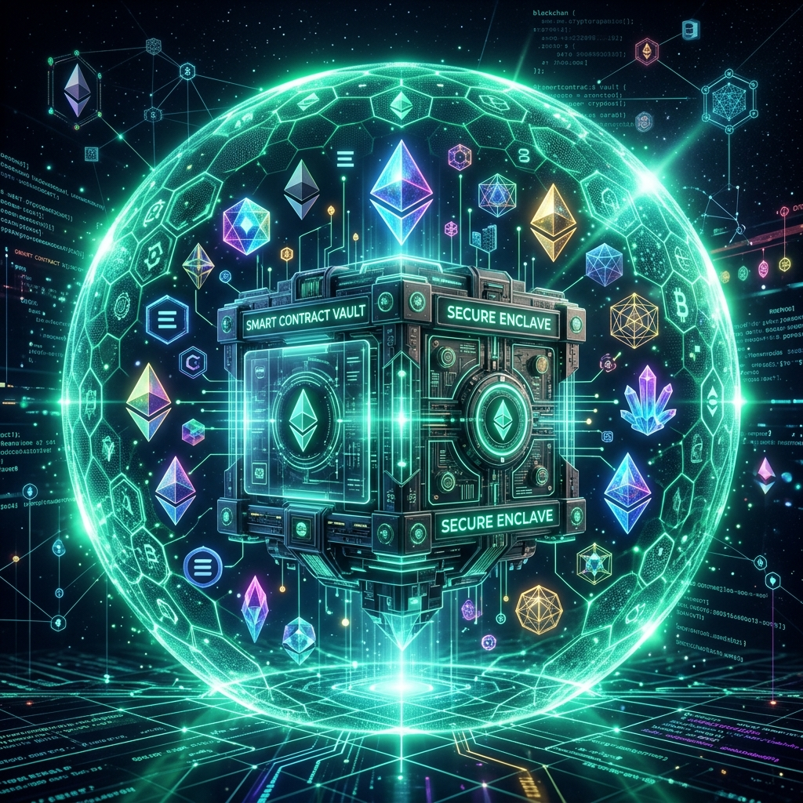
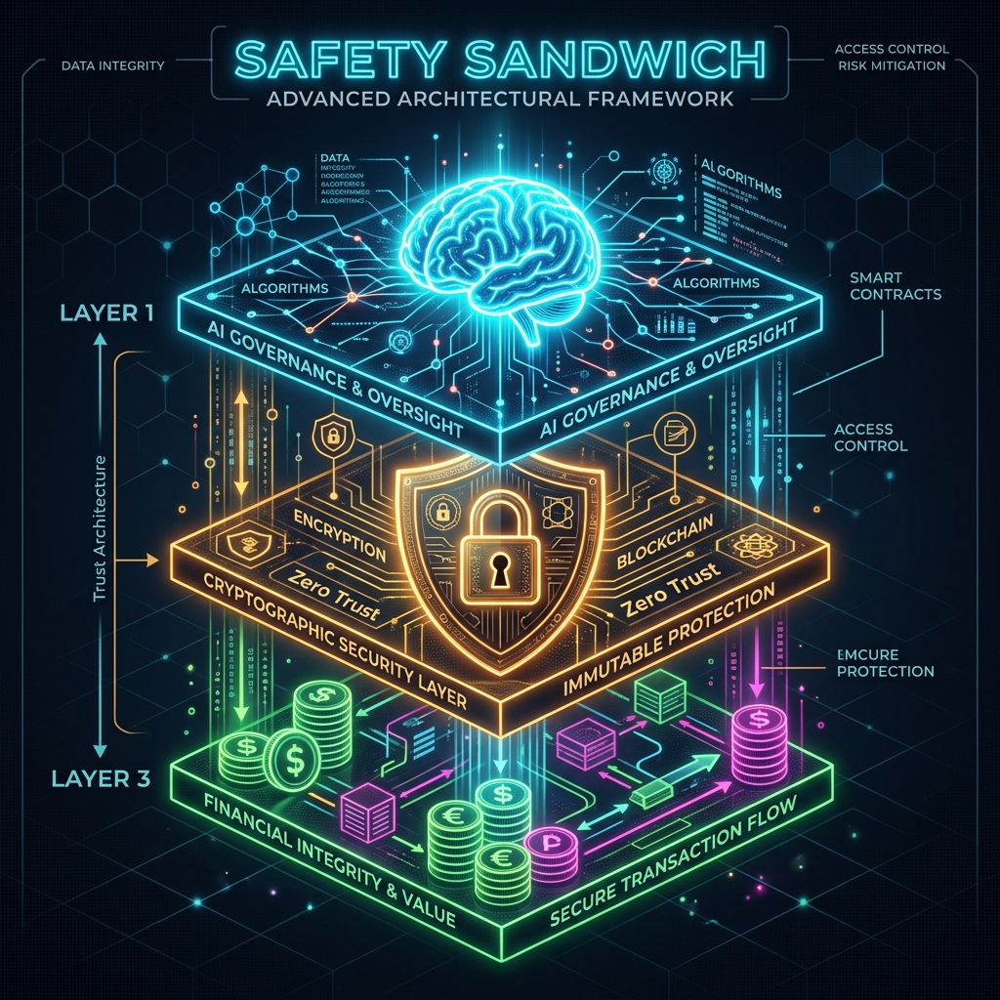

The Programmable Financial Protocol
Aima Protocol (formerly UTG) is high-fidelity financial infrastructure that allows AI agents to interact with the real world securely, legally, and reliably without custodial risk.
"Action": "defi_eth.request_eth_transfer_reliable"
"Arguments": {
"to_address": "0xAb580...",
"amount_eth": 0.05
}
// ⬇️ GATEWAY RESPONSE
"Status": 401: PENDING_HUMAN_SIGNATURE
"Message": "Halted. Strict HITL Enforced. Ask user for their 6-digit PIN on Telegram."Protocol Architecture

🛡️ Deep Dive: Security & Edge Cases
Traditional finance bridges fail at the edge. Aima UTG is engineered to handle "Agentic Chaos"—the unpredictable behavior of LLMs.
1. The Idempotency Lock (Double-Spend Prevention)
If an AI agent retries a transaction 100 times due to a high-latency response, the Gateway uses deterministic hashing to ensure only one execution occurs.
# Check if this task has already been processed
id_key = f"{user_id}_{task_name}"
memo = self.idempotency.check_key(id_key, user_id)
if memo and memo["status"] == "SUCCESS":
return memo["response"] # Return cached result instantly2. Execution Guardrails (Infinite Loop Prevention)
Agents can fall into "reasoning loops." We enforce a strict temporal budget on every transaction to prevent resource exhaustion.
# Anti-Loop & Timeout Check
if time.time() - self.start_time > self.timeout:
return {"status": "FAILED", "error": f"Task Timeout"}3. Hashed Credentials (Local Vault Security)
Even if the local SQLite database is compromised, Aima never stores raw API keys. We use SHA-256 salted hashing to verify identity.
# Generate raw key but only store the hash
raw_key = f"utg_{secrets.token_urlsafe(32)}"
key_hash = hashlib.sha256(raw_key.encode()).hexdigest()
conn.execute("INSERT INTO api_keys (key_hash, name) VALUES (?, ?)")1. Installation
Ensure you have Python 3.10+ installed. Use the tabs below for your platform's specific commands.
# Install the Gateway as a global tool
pip install .
# If Scripts folder isn't on PATH, use:
python -m pip install .# Install via Pip (Recommended)
pip3 install .
# Ensure Playwright dependencies are met
npx playwright install firefox# Install UTG
pip install .
# Setup Playwright Binaries
npx playwright install-deps
npx playwright install firefox2. The Onboarding Wizard
No coding required! Run our interactive setup to generate your secure Identity Keys and configuration.
utg-onboardNOTE: If the command isn't found, use python src/gateway/utils/onboarding_wizard.py
Connecting to OpenClaw
Our completely revamped onboarding wizard automatically pushes the configuration to your OpenClaw JSON. But if you wish to see how it works under the hood (via WSL Bridge), here is the schema:
"mcp": {
"servers": {
"utg-gateway": {
"command": "/mnt/c/.../python.exe",
"args": ["/mnt/c/.../src/gateway/server.py"]
}
}
}Managing API Keys
Every connection to the Aima UTG must be authorized via an API key. You can generate these keys during onboarding or via the CLI.
# Generate a new API Key for a specific client
python src/gateway/utils/generate_key.py --name "Finance-Bot-01"Keys are hashed and stored in your Local Vault (SQLite). The raw key is only shown once—save it securely!
Full Changelog
v1.1.0 - The "Security & API" Update
- Added ApiKeyManager for hashed API key authorization.
- Integrated generate_key utility into the Onboarding Wizard.
- Refactored server.py to support AIMA_API_KEY environment validation.
- Removed direct Cloudflare dependencies from internal documentation.
v1.0.0 - Initial Protocol Release
- Launched the Eva Protocol Stack core architecture.
- Implemented Strict HITL (Human-in-the-Loop) via 6-digit PIN.
- Added global IdempotencyManager to prevent double-spending.
- Created the ExecutionWrapper for durable saga management.
⚖️ Legal, Privacy, and Compliance
Enterprise protocols require enterprise governance. The UTG Gateway natively complies with strict regulatory frameworks.
EU GDPR Compliance (Data Residency)
All transactional data, logs, and cryptographic traces are stored locally in the Agent Vault (SQLite). No data is sent to external or custodial servers, guaranteeing perfect adherence to EU data residency laws.
US E-SIGN ACT (Non-Repudiation)
Every executed transaction generates a cryptographic, immutable PDF receipt using Ed25519 signatures. During onboarding, users explicitly type `AGREE` to legally bind their gateway passcode to their identity under the E-SIGN Act.
Terms of Service Policy
1. Non-Custodial Liability: The protocol and the authors have no access to the `ETHEREUM_PRIVATE_KEY` stored on the user's localhost. Users assume full liability for the security of their local environment.
2. AI Indemnification: AI models (OpenRouter, Ollama) are non-deterministic. The protocol mitigates risk via the "Strict HITL Safety Sandwich", but the ultimate fiduciary duty rests with the human supplying the 6-digit signature PIN.
3. Anti-Spoofing: M-Pesa 3.0 integrations require valid Safaricom cryptographic handshake verification. Exploitation of the webhook tunnels violating local financial laws results in automatic reporting.